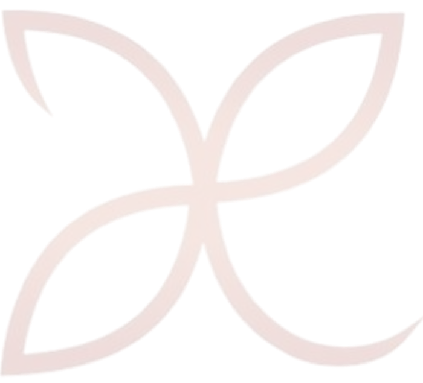
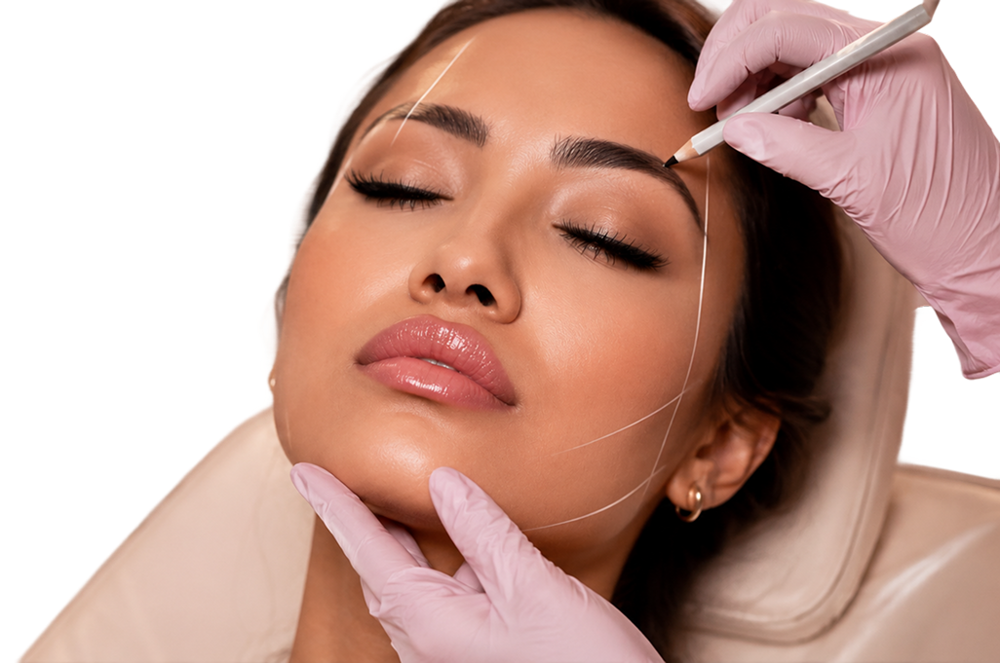
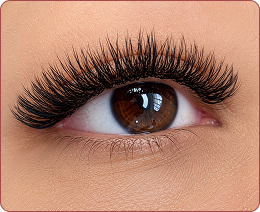
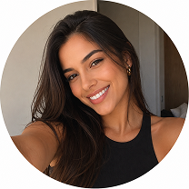
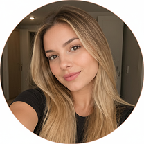

Realce sua beleza, realce sua essência!
Tratamentos estéticos personalizados
AGENDE SEU HORÁRIOTratamentos estéticos personalizados
AGENDE SEU HORÁRIO

Serviços oferecidos

Clássico fio a fio é um olhar definido e alongado, cria um efeito mais natural e discreto, ideal para quem deseja apenas aumentar o comprimento e a plenitude dos cílios de forma sutil.

O resultado é um efeito de volume e naturalidade nos cílios. O formato de Y ajuda a criar uma base mais ampla nos cílios, enquanto a ponta fina proporciona um visual mais natural e suave, devido ao espaçamento entre o cruzamento das pontas desse formato.

As extensões em formato 3D (W) têm a característica de possuir uma ponta que se divide em três partes, formando um visual tridimensional. Mantém a delicadeza e suavidade, cruzamentos dos fios menos espaçados com aspecto mais aveludado.

Utiliza-se produtos químicos suaves para curvar os cílios naturais desde a raiz até as pontas. Esse processo cria uma curvatura duradoura nos cílios (de 4 a 8 semanas de acordo com o ciclo de crescimento do fio).

A técnica de brow lamination, ou laminado de sobrancelhas, é um procedimento cosmético projetado para criar um efeito de sobrancelhas mais definidas, uniformes e densas. Ideal para quem possui fios naturalmente finos, ralos ou ondulados. Podendo ser combinada com a aplicação de tintura e henna.

O design de sobrancelha personalizado leva em conta fatores como o formato do rosto, a posição dos olhos, o nariz, preferências pessoais do cliente, resultando em um resultado mais personalizado e adaptado às necessidades específicas de cada pessoa.

O design personalizado com henna é uma técnica especializada em que a henna, um corante natural feito a partir da planta Lawsonia inermis, é utilizado para criar um design temporário nas sobrancelhas proporcionando cor

O design de sobrancelha com tintura é um procedimento que combina a modelagem das sobrancelhas com a aplicação de tintura para realçar a cor preferencialmente dos pelos e criar uma aparência mais definida e expressiva, podendo durar de 4 a 6 semanas.

Os pelos são capturados pela linha e removidos de forma eficaz desde a raiz, causando menos irritabilidade a quem possui sensibilidade a cera.

A epilação facial com cera é uma opção rápida e eficaz, sendo usada a cera aquecida, para peles que não são sensíveis.

Os pelos são capturados pela linha e removidos de forma eficaz desde a raiz, causando menos irritabilidade a quem possui sensibilidade a cera.

A epilação facial com cera é uma opção rápida e eficaz, sendo usada a cera aquecida, para peles que não são sensíveis.
Atendimento
Personalizado
Ambiente
acolhedor
Produtos de
Qualidade
Clientes
Satisfeitas

Águas Lindas de Goiás
★★★★★ 2 semanas atrás
A melhor em cílios e sobrancelhas! Atendimento impecável e ambiente super confortável.

Águas Lindas de Goiás
★★★★☆ 1 mês atrás
Ambiente agradável e profissional atenciosa. O resultado ficou muito bonito, apenas gostaria de ter mais opções de horários disponíveis.

Águas Lindas de Goiás
★★★★★ 3 semanas atrás
Já fiz cílios e sobrancelhas e fiquei encantada com o resultado. Recomendo para quem procura qualidade e atendimento personalizado.
Sobre mim
Especialista em extensão de cílios e design de sobrancelhas.
Oferecendo atendimento personalizado para valorizar a beleza natural de cada cliente.

Local de atendimento
Loja 21 - Parque das Águas Bonitas 1, Águas Lindas de Goiás - GO
Segunda a Sexta
08:00 às 18:00
Fácil localização